pacman::p_load(tidyverse, ggplot2, patchwork, ggalluvial, gridExtra, sf, fmsb)Take-home Exercise 3
Navigating Jakarta’s Traffic Network Using Grab Posisi Data
1. Overview
In this Take-Home Exercise, I will be leveraging the Grab Posisi dataset to analyse Jakarta’s growing need for on-demand ride-hailing services like Grab, given its increasing pace of urbanisation, particularly in areas with high Points of Interests (POIs).
Feel free to move over to my team’s Netlify site for a more in-depth understanding of our project scope and our progress: https://is415-projectgrab-g2.netlify.app/
With that said, let’s begin with my contributions to the project. In this exercise, I will ddelve into two aspects of the project - exploratory data analysis (EDA), exploratory spatial data analysis (ESDA) and Origin-Destination spatial analysis on the Grab dataset. My goal is to experiment with as many charts as possible, e.g. heatmaps, Kernel Density Estimation (KDE), to answer critical questions that will be useful in informing us of ride-hailing demand, traffic hotspots, and movement patterns around key locations in Jakarta. Eventually, the most useful charts will be selected in the final project.
2. Let’s Set Up!
2.1 Installing Required Packages
Firstly, let us begin by loading these requiring libraries into our R environment.
tidyverse: a collection of R packages designed for data science. All packages share an underlying design philosophy, grammar, and data structure.ggplot2: for creating advanced visualisations, graphics and maps using the Grammar of Graphics.patchworkand gridExtra: for arranging multiple ggplot2 maps beside each otherggalluvial: allows for building flow diagrams between origin and destination locations, similar to a sankey diagram.sf:
fmsb
2.2 Importing Datasets
As mentioned, I will be using the Grab Posisi dataset for Jakarta which contains GPS pings from Grab vehicles, including timestamps, route data, and vehicle type (motorcycle/car).
In addition, my team will be delving into the district administration level to offer more meaningful analysis that is still computationally suitable for this project. We have also further augmented the dataset by including data categories such as, POIs, weather, population size.
Datasets used in this project
Jakarta Point of interests (POIs): https://data.humdata.org/dataset/hotosm_idn_points_of_interest
Weather API https://www.weatherbit.io/
Jakarta Population Density Data: https://storymaps.arcgis.com/stories/36e38ceefab0455eb6059a734381723c
Jakarta Map: https://data.humdata.org/dataset/cod-ab-idn
Grab Possi: https://engineering.grab.com/grab-posisi
trips <- readRDS("data/aspatial/trip_data.rds")
pois <- readRDS("data/aspatial/jakarta_pois.rds")
population <- read_csv("data/aspatial/jakarta_township_population.csv")Rows: 264 Columns: 5
── Column specification ────────────────────────────────────────────────────────
Delimiter: ","
chr (4): province, city, district, township
dbl (1): population_2019
ℹ Use `spec()` to retrieve the full column specification for this data.
ℹ Specify the column types or set `show_col_types = FALSE` to quiet this message.The trips tibble dataframe contains 55,995 unique Grab trips based on every 1 second GPS ping. This dataset also includes useful variables such as the driving_mode (car / motorcycle), total_duration_minutes, total_distance_km, location data (origin_district & destination_district) and time data (origin_day & origin_hour). I will be most interested in knowing where a Grab trip ends, i.e. its destination district, across which periods of the day and week.
glimpse(trips)Rows: 55,995
Columns: 29
$ trj_id <chr> "1", "10000", "10002", "10003", "10006", "10007…
$ driving_mode <chr> "car", "motorcycle", "motorcycle", "car", "moto…
$ origin_time <dttm> 2019-04-11 14:17:35, 2019-04-16 00:51:24, 2019…
$ destination_time <dttm> 2019-04-11 14:36:24, 2019-04-16 01:00:51, 2019…
$ total_duration_minutes <dbl> 18.816667, 9.450000, 21.300000, 32.166667, 8.96…
$ total_distance_km <dbl> 5.943848, 2.809531, 8.040161, 16.848662, 2.8580…
$ average_speed_kmh <dbl> 18.952926, 17.838289, 22.648340, 31.427557, 19.…
$ origin_rawlat <dbl> -6.197622, -6.248311, -6.249766, -6.174716, -6.…
$ origin_rawlng <dbl> 106.7690, 106.9304, 106.9682, 106.8978, 106.644…
$ destination_rawlat <dbl> -6.239817, -6.229177, -6.235125, -6.318963, -6.…
$ destination_rawlng <dbl> 106.8019, 106.9470, 106.8970, 106.8517, 106.654…
$ origin_lat <dbl> -2939149, -2993318, -3001902, -2956625, -290569…
$ origin_lng <dbl> 13499453, 13554146, 13569122, 13556387, 1345319…
$ destination_lat <dbl> -2962961, -2989069, -2980935, -3005195, -289817…
$ destination_lng <dbl> 13504006, 13564901, 13543389, 13507514, 1346196…
$ origin_province <chr> "Jakarta", "Jakarta", "Outside of Jakarta", "Ja…
$ origin_city <chr> "Kota Jakarta Barat", "Kota Jakarta Timur", "Ou…
$ origin_district <chr> "Kebon Jeruk", "Duren Sawit", "Outside of Jakar…
$ origin_township <chr> "Kebon Jeruk", "Pondok Kelapa", "Outside of Jak…
$ destination_province <chr> "Jakarta", "Outside of Jakarta", "Jakarta", "Ja…
$ destination_city <chr> "Kota Jakarta Selatan", "Outside of Jakarta", "…
$ destination_district <chr> "Kebayoran Baru", "Outside of Jakarta", "Duren …
$ destination_township <chr> "Selong", "Outside of Jakarta", "Pondok Bambu",…
$ origin_datetime <dttm> 2019-04-11 14:17:35, 2019-04-16 00:51:24, 2019…
$ destination_datetime <dttm> 2019-04-11 14:36:24, 2019-04-16 01:00:51, 2019…
$ origin_day <chr> "Thursday", "Tuesday", "Monday", "Friday", "Sun…
$ origin_hour <dbl> 14, 0, 5, 10, 23, 7, 4, 4, 2, 10, 15, 10, 11, 0…
$ destination_day <chr> "Thursday", "Tuesday", "Monday", "Friday", "Sun…
$ destination_hour <dbl> 14, 1, 6, 11, 23, 7, 4, 4, 4, 10, 16, 10, 11, 0…
Note
Grab trips from outside of Jakarta and moving out of Jakarta are attributed to the outer islands of Jakarta, namely the Kepulauan Seribu Regency, which are chains of islands in the North of Jakarta’s coasts.
This dataset contains all unique 9,685 POIs found within each district of Jakarta. This will give us insights on how Grab is demanded based on the availability of POIs across different districts.
glimpse(pois)Rows: 9,685
Columns: 11
$ poi_name <chr> "TK Sekolah Kemurnian I", "PAUD Melati X", "Posyandu Cempaka"…
$ province <chr> "jakarta", "jakarta", "jakarta", "jakarta", "jakarta", "jakar…
$ city <chr> "kota jakarta barat", "kota jakarta timur", "kota jakarta tim…
$ district <chr> "taman sari", "pasar rebo", "pasar rebo", "cilandak", "koja",…
$ category <chr> "Facilities_Services", "Facilities_Services", "Essentials", "…
$ poi_type <chr> "kindergarten", "kindergarten", "clinic", "kindergarten", "co…
$ geometry <POINT [m]> POINT (13527881 -2927558), POINT (13508901 -3013973), P…
$ lat_4326 <dbl> -6.146429, -6.334694, -6.331832, -6.313693, -6.124969, -6.340…
$ lng_4326 <dbl> 106.8132, 106.8634, 106.8456, 106.7959, 106.9196, 106.8066, 1…
$ lat_5580 <dbl> -2927558, -3013973, -3009066, -2991388, -2940921, -3004218, -…
$ lng_5580 <dbl> 13527881, 13508901, 13502345, 13486227, 13575632, 13484988, 1…Thirdly, the population dataframe contains all population counts in 2019 down to the township level. We will need to perform some data wrangling to summarise it to the district level later.
glimpse(population)Rows: 264
Columns: 5
$ province <chr> "Jakarta", "Jakarta", "Jakarta", "Jakarta", "Jakarta",…
$ city <chr> "Kota Jakarta Utara", "Kota Jakarta Barat", "Kota Jaka…
$ district <chr> "Pademangan", "Tambora", "Kramat Jati", "Jatinegara", …
$ township <chr> "ancol", "angke", "bale kambang", "bali mester", "bamb…
$ population_2019 <dbl> 4921, 1545, 3774, 2762, 2667, 1724, 2938, 3774, 982, 2…3. Data Wrangling
3.1 Categorising Point of interests Data
I assisted my team mate, Jia Le, with handling some of the data cleaning process of the project. This includes re-categorising the 205 POIs identified for each district into its correct category as the initial categories were previously classified wrongly.
There are a total of 9 unique categories that needed some re-categorisation.
- Facilities_Services
- Essentials
- Offices_Business
- Cultural_Attractions
- Restaurants_Food
- Recreation_Entertainment
- Others
- Shops
- Tourism_Spots
For instance, the ‘taxi’ POI was initially classified as ‘Others’ instead of something more related like ‘Facilities_Services’.
3.2 Aggregate the Population Dataset
It is worth noting that we have two lakes that are considered districts here - Danau Sunter and Danau Sunter DII - which explains why they have 0 population size. We also do not have population data for districts outside of Jakarta here.
population <- population %>%
group_by(district) %>%
summarise(population_count = sum(population_2019))
# Inspect
population# A tibble: 44 × 2
district population_count
<chr> <dbl>
1 Cakung 38710
2 Cempaka Putih 7440
3 Cengkareng 40470
4 Cilandak 16880
5 Cilincing 37471
6 Cipayung 21336
7 Ciracas 30015
8 Danau Sunter 0
9 Danau Sunter Dll 0
10 Duren Sawit 38150
# ℹ 34 more rows3.3 Prepare the Augmented POIs Dataset
For a more useful analysis, we can break it down by POI category types and get the count of POIs within each category for each district, as shown in the pois_num tibble below.
# Count the number of POIs by district
pois_num <- pois %>%
st_drop_geometry() %>%
group_by(district) %>%
summarise(num_of_pois = n(), .groups = 'drop')
# Inspect
pois_num# A tibble: 44 × 2
district num_of_pois
<chr> <int>
1 cakung 56
2 cempaka putih 38
3 cengkareng 298
4 cilandak 242
5 cilincing 119
6 cipayung 56
7 ciracas 126
8 danau sunter 1
9 danau sunter dll 3
10 duren sawit 173
# ℹ 34 more rows3.4 Preprare the Augmented Trips Dataset
I noticed that we have records where destination districts are found outside of Jakarta’s boundary. For the purpose of analysing Grab trends within Jakarta, I will filter these trip records out.
trips <- trips %>%
filter(destination_district != "Outside of Jakarta" |
origin_district != "Outside of Jakarta")
# Inspect
head(trips)# A tibble: 6 × 29
trj_id driving_mode origin_time destination_time
<chr> <chr> <dttm> <dttm>
1 1 car 2019-04-11 14:17:35 2019-04-11 14:36:24
2 10000 motorcycle 2019-04-16 00:51:24 2019-04-16 01:00:51
3 10002 motorcycle 2019-04-08 05:55:41 2019-04-08 06:16:59
4 10003 car 2019-04-19 10:52:34 2019-04-19 11:24:44
5 10007 car 2019-04-11 07:05:00 2019-04-11 07:28:56
6 10012 car 2019-04-20 02:38:54 2019-04-20 04:05:16
# ℹ 25 more variables: total_duration_minutes <dbl>, total_distance_km <dbl>,
# average_speed_kmh <dbl>, origin_rawlat <dbl>, origin_rawlng <dbl>,
# destination_rawlat <dbl>, destination_rawlng <dbl>, origin_lat <dbl>,
# origin_lng <dbl>, destination_lat <dbl>, destination_lng <dbl>,
# origin_province <chr>, origin_city <chr>, origin_district <chr>,
# origin_township <chr>, destination_province <chr>, destination_city <chr>,
# destination_district <chr>, destination_township <chr>, …Next, I will leverage the trips tibble dataframe to group all trips by destination_district and summarise them by number of trips, average duration (minutes) and average distance travelled (km).
trips_dest <- trips %>%
group_by(destination_district) %>%
summarise(
num_of_trips = n(),
avg_duration_minutes = mean(total_duration_minutes, na.rm = TRUE),
avg_distance_km = mean(total_distance_km, na.rm = TRUE)
) %>%
rename(district = destination_district) %>%
mutate(district = tolower(district))
trips_origin <- trips %>%
group_by(origin_district) %>%
summarise(
num_of_trips = n(),
avg_duration_minutes = mean(total_duration_minutes, na.rm = TRUE),
avg_distance_km = mean(total_distance_km, na.rm = TRUE)
) %>%
rename(district = origin_district) %>%
mutate(district = tolower(district))I will also join the pois_num dataframe to trips_dest and trips_origin by the district column so we can append the total number of POIs for each destination district.
trips_dest_pois <- trips_dest %>%
inner_join(pois_num, by = "district")
trips_origin_pois <- trips_origin %>%
inner_join(pois_num, by = "district")Let’s also include the population data from the population dataframe we imported into R.
# For the destination
district_dest <- trips_dest_pois %>%
left_join(population %>% mutate(district = tolower(district)),
by = "district")
district_dest# A tibble: 44 × 6
district num_of_trips avg_duration_minutes avg_distance_km num_of_pois
<chr> <int> <dbl> <dbl> <int>
1 cakung 844 21.5 6.40 56
2 cempaka putih 392 19.1 6.13 38
3 cengkareng 1120 19.9 6.20 298
4 cilandak 905 20.1 5.78 242
5 cilincing 277 24.4 7.24 119
6 cipayung 552 22.5 7.08 56
7 ciracas 546 22.6 7.03 126
8 danau sunter 17 17.3 5.21 1
9 danau sunter d… 33 16.9 5.00 3
10 duren sawit 877 21.1 6.32 173
# ℹ 34 more rows
# ℹ 1 more variable: population_count <dbl># For the origin
district_origin <- trips_origin_pois %>%
left_join(population %>% mutate(district = tolower(district)),
by = "district")
district_origin# A tibble: 44 × 6
district num_of_trips avg_duration_minutes avg_distance_km num_of_pois
<chr> <int> <dbl> <dbl> <int>
1 cakung 628 22.2 6.56 56
2 cempaka putih 460 17.9 5.52 38
3 cengkareng 928 20.2 6.00 298
4 cilandak 830 20.4 6.09 242
5 cilincing 266 24.7 7.30 119
6 cipayung 481 22.9 7.09 56
7 ciracas 607 23.1 7.38 126
8 danau sunter 4 19.4 8.55 1
9 danau sunter d… 34 21.3 7.54 3
10 duren sawit 891 21.3 6.39 173
# ℹ 34 more rows
# ℹ 1 more variable: population_count <dbl>4. Exploratory Data Analysis (EDA)
In this EDA process, I will leverage the datasets we’ve imported and wrangled to identify charts that produce the most interesting insights in terms of traffic pattersn, demand for Grab trends, temporal trends and POI analysis.
4.1 Traffic Trends & Demand Distribution
4.1.1 Distribution of Trips Origin and Destination By District
In terms of trip origins, districts such as Setia Budi, Grogol Petamburan, and Kebayoran Baru have the highest traffic volumes moving out of the district, indicating areas of high trip demand. In terms of trip destinations, districts such as Tanah A bang and Setia Budi are most popular for Grab trips. In contrast, districts like Johar Baru, Dananu Sunter DII, and Danau Sunter experience the lowest traffic volumes, suggesting potential areas of under-service or potentially low demand for Grab services.
# Count trips for origin districts
origin_counts <- trips %>%
count(origin_district) %>%
rename(total_trips = n)
# Count trips for destination districts
destination_counts <- trips %>%
count(destination_district) %>%
rename(total_trips = n)
# Create a bar plot for origin districts
p1 <- ggplot(origin_counts, aes(x = reorder(origin_district, -total_trips), y = total_trips)) +
geom_bar(stat = "identity", fill = "skyblue2") +
theme_gray() +
labs(title = "Total Number of Grab Trips per Origin District",
x = "Origin District",
y = "Number of Trips") +
theme(
plot.title = element_text(hjust = 0.5, size = 14, face = "bold"), # Center and style the title
axis.text.x = element_text(angle = 45, hjust = 1)
)
# Create a bar plot for destination districts
p2 <- ggplot(destination_counts, aes(x = reorder(destination_district, -total_trips), y = total_trips)) +
geom_bar(stat = "identity", fill = "pink2") +
theme_gray() +
labs(title = "Total Number of Grab Trips per Destination District",
x = "Destination District",
y = "Number of Trips") +
theme(
plot.title = element_text(hjust = 0.5, size = 14, face = "bold"), # Center and style the title
axis.text.x = element_text(angle = 45, hjust = 1)
)
p1 / p2 We can also inspect how the population size of each district influences the number of trips taken to and from each district. Generally, districts with a high number of trips per capita from origin also displayed more frequent trips taken into the district.
Interestingly, we see some districts with the highest trips per capita but in reality, they do NOT correspond to high number of trips (previous chart). For instance, Danau Sunter DII and Danau Sunter are districts with the lowest number of trips but since they also have a population of 0, it results in a seemingly high number of trips per capita.
Prepare data
destination_data <- district_dest %>%
select(district, population_count, num_of_trips) %>%
mutate(trips_per_capita_dest = num_of_trips / population_count) %>%
rename(district = district)
origin_data <- district_origin %>%
select(district, population_count, num_of_trips) %>%
mutate(trips_per_capita_origin = num_of_trips / population_count) %>%
rename(district = district)
combined_data <- destination_data %>%
select(district, trips_per_capita = trips_per_capita_dest) %>%
mutate(trip_type = "Destination") %>%
bind_rows(
origin_data %>%
select(district, trips_per_capita = trips_per_capita_origin) %>%
mutate(trip_type = "Origin")
)# Create the line plot for trips per capita with specified colors and theme
ggplot(combined_data, aes(x = district, y = trips_per_capita, color = trip_type, group = trip_type)) +
geom_line(size = 1.2) +
geom_point(size = 2) +
labs(
title = "Number of Trips Per Capita by District",
x = "District",
y = "Trips Per Capita"
) +
theme_gray() +
theme(
plot.title = element_text(size = 16, face = "bold", hjust = 0.5),
axis.text.x = element_text(angle = 90, hjust = 1)
) +
scale_color_manual(values = c("Origin" = "lightblue3", "Destination" = "pink3"))Warning: Using `size` aesthetic for lines was deprecated in ggplot2 3.4.0.
ℹ Please use `linewidth` instead.
Instead, we can just separate the number of trips and the population size as such. Generally, we do not see any trends, meaning that the population size has no effect on the number of trips taken.
Prepare data
district_data <- district_dest %>%
select(district, population_count, num_of_trips) %>%
rename(trips = num_of_trips)
district_data <- district_data %>%
bind_rows(
district_origin %>%
select(district, population_count, num_of_trips) %>%
rename(trips = num_of_trips)
) %>%
group_by(district) %>%
summarise(
population_count = mean(population_count, na.rm = TRUE),
total_trips = mean(trips, na.rm = TRUE)
) %>%
arrange(desc(population_count))ggplot(district_data) +
geom_line(aes(x = reorder(district, population_count), y = total_trips, group = 1, color = "Average Trips Taken"), size = 1.2) + # Updated label
geom_line(aes(x = reorder(district, population_count), y = population_count * max(total_trips) / max(population_count), group = 2, color = "Population Count"), size = 1.2) +
geom_point(aes(x = reorder(district, population_count), y = total_trips, color = "Average Trips Taken"), size = 3) + # Updated label
geom_point(aes(x = reorder(district, population_count), y = population_count * max(total_trips) / max(population_count), color = "Population Count"), size = 3) +
labs(
title = "Mean Number of Trips and Population Count by District",
x = "District",
y = "Mean Number of Trips",
color = "Legend"
) +
theme_gray() +
theme(
plot.title = element_text(size = 16, face = "bold", hjust = 0.5), # Center, bold, size 16
axis.text.x = element_text(angle = 90, hjust = 1),
legend.position = "top"
) +
scale_color_manual(values = c("Average Trips Taken" = "lightblue3", "Population Count" = "pink3")) + # Updated color mapping
scale_y_continuous(
sec.axis = sec_axis(~ . * max(district_data$population_count) / max(district_data$total_trips), name = "Population Count") # Secondary axis
)4.1.2 Top Origins and Destinations for Ride-hailing Trips
Next, we will prepare the top 5 districts with the most number of Grab trips based on trip origin and trip destinations.
# Calculate top 5 districts for origin_district
top_5_origin_districts <- trips %>%
count(origin_district) %>%
rename(total_trips = n) %>%
arrange(desc(total_trips)) %>%
slice(1:5)
# Calculate top 5 districts for destination_district
top_5_destination_districts <- trips %>%
count(destination_district) %>%
rename(total_trips = n) %>%
arrange(desc(total_trips)) %>%
slice(1:5)By plotting a bar chart, we can identify districts with the most demand for Grab services for both in-flow and out-flow of Grab trips. In particular, we can see that districts with most Grab trips originating from it corresponds with the highest number of Grab trips arriving into it (e.g. Setia Budi).
Such alignment suggests that these districts function as key hubs of movement within the city, likely due to high-density residential, commercial, or mixed-use areas.
# Plot for Top 5 Origin Districts
p1 <- ggplot(top_5_origin_districts, aes(y = reorder(origin_district, total_trips), x = total_trips)) +
geom_bar(stat = "identity", fill = "skyblue") +
theme_gray() +
labs(title = "Most Popular Origin Districts", y = "District", x = "Number of Trips") +
theme(
plot.title = element_text(hjust = 0.5, size = 14, face = "bold")
)
# Plot for Top 5 Destination Districts
p2 <- ggplot(top_5_destination_districts, aes(y = reorder(destination_district, total_trips), x = total_trips)) +
geom_bar(stat = "identity", fill = "pink2") +
theme_gray() +
labs(title = "Most Popular Destination Districts", y = "District", x = "Number of Trips") +
theme(
plot.title = element_text(hjust = 0.5, size = 14, face = "bold")
)
p1 + p2
4.1.3 Least popular origins and destinations for ride-hailing trips
We can also gather origin and destination districts with the least trips by arranging the total_trips in descending order and filtering districts with the lowest 5 number of trips.
Prepare data
orig_count <- trips %>%
count(origin_district) %>%
rename(trips = n) %>%
arrange(trips)
dest_count <- trips %>%
count(destination_district) %>%
rename(trips = n) %>%
arrange(trips)
bottom_5_orig <- orig_count %>%
slice_head(n = 5)
bottom_5_dest <- dest_count %>%
slice_head(n = 5)
bottom_5_orig$origin_district <- factor(bottom_5_orig$origin_district,
levels = bottom_5_orig$origin_district)
bottom_5_dest$destination_district <- factor(bottom_5_dest$destination_district,
levels = bottom_5_dest$destination_district)Here I plot the geom_bar() of the ggplot2 package. The results aligns with what we mentioned earlier, where the same origin districts with the least out-flow of Grab trips also happen to be districts with the least in-flow of Grab trips.
p1 <- ggplot(bottom_5_orig, aes(y = origin_district, x = trips)) +
geom_bar(stat = "identity", fill = "lightblue") +
labs(title = "Least Popular Origin Districts", y = "District", x = "Trips") +
theme_gray() +
theme(plot.title = element_text(hjust = 0.5, size = 14, face = "bold"))
p2 <- ggplot(bottom_5_dest, aes(y = destination_district, x = trips)) +
geom_bar(stat = "identity", fill = "pink2") +
labs(title = "Least Popular Destination Districts", y = "District", x = "Trips") +
theme_gray() +
theme(plot.title = element_text(hjust = 0.5, size = 14, face = "bold"))
p1 + p2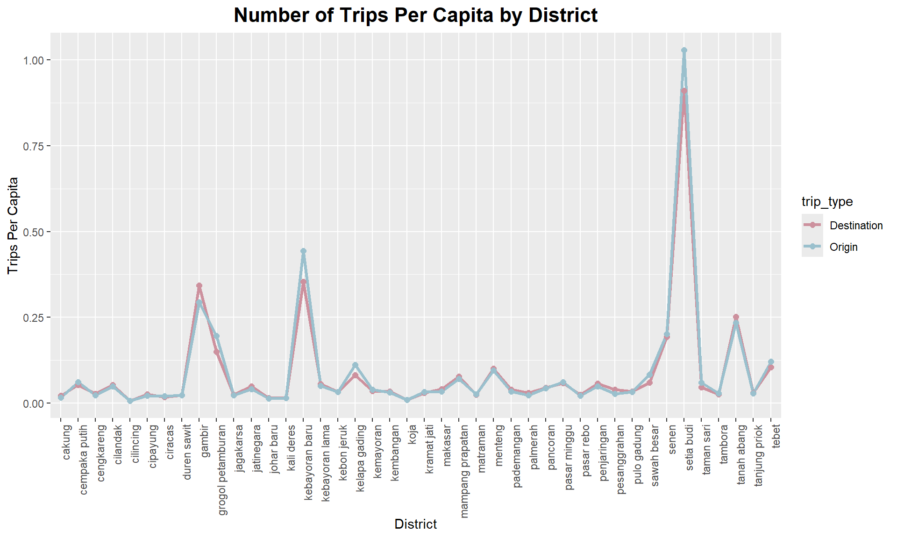
4.1.4 Popularity of Districts Based on Driving Mode
When using the geom_density() function to create density plots, we can see a smoothed version of the trip distance (in kilometres), further drilled down by the mode of driving (car vs motorcycle). There is almost no difference in relative distance travelled by cars or motorcycles.
For longer distances traveled, cars are slightly more preferredthan motorcycles, while for shorter trip distances, both driving modes are equally demanded.Thus, we only see some instances where cars are preferred for when journeys are longer.
ggplot(trips, aes(x = total_distance_km, fill = driving_mode)) +
geom_density(alpha = 0.8) +
labs(title = "Trip Distance (km) by Driving Mode (All Trips)",
x = "Total Distance (km)",
y = "Density") +
theme_gray() +
theme(plot.title = element_text(hjust = 0.5, size = 14, face = "bold")) +
scale_fill_manual(values = c("lightblue", "pink2"))This is the adjusted plot when we completely remove all trips with origins and destinations outside of Jakarta. The distance of Grab journeys significantly decrease from 80km to ~20km, and observations of popularity of the driving mode remains the same.
trips_inside_jakarta <- trips %>%
filter(origin_district != 'Outside of Jakarta', destination_district != 'Outside of Jakarta')
ggplot(trips_inside_jakarta, aes(x = total_distance_km, fill = driving_mode)) +
geom_density(alpha = 0.8) +
labs(title = "Trip Distance (km) by Driving Mode (Within Jakarta)",
x = "Total Distance (km)",
y = "Density") +
theme_gray() +
theme(plot.title = element_text(hjust = 0.5, size = 14, face = "bold")) +
scale_fill_manual(values = c("lightblue", "pink2"))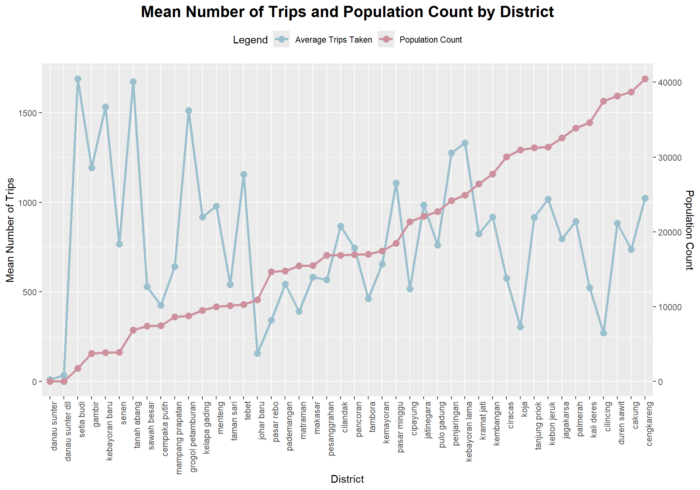
We can further break this down into popular origins and destinations for car and motorcycle drivers respectively. It is rather intriguing that both modes of driving have similar top origin and destinations, as well as least popular origin and destinations travelled. Once again, indicating how both vehicle types are equally demanded in Jakarta.
1) For Car Drivers
# Filter trips for cars only
car_trips <- trips %>%
filter(driving_mode == 'car')
# Calculate counts for origin districts
origin_counts <- car_trips %>%
count(origin_district) %>%
rename(total_trips = n) %>%
arrange(desc(total_trips))
# Get top 5 origin districts
top_5_origin_districts <- origin_counts %>%
slice_head(n = 5)
# Get least 5 origin districts
bottom_5_origin_districts <- origin_counts %>%
slice_tail(n = 5)
# Set factor levels for top and bottom origin districts
top_5_origin_districts$origin_district <- factor(top_5_origin_districts$origin_district,
levels = top_5_origin_districts$origin_district)
bottom_5_origin_districts$origin_district <- factor(bottom_5_origin_districts$origin_district,
levels = bottom_5_origin_districts$origin_district)
# Plot for Top 5 Origin Districts in descending order
p1 <- ggplot(top_5_origin_districts, aes(y = reorder(origin_district, total_trips), x = total_trips)) +
geom_bar(stat = "identity", fill = "lightgreen") +
theme_gray() +
labs(title = "Top 5 Popular Origin Districts (Cars)", y = "District", x = "Number of Trips") +
theme(
plot.title = element_text(hjust = 0.5, size = 14, face = "bold")
)
# Plot for Least 5 Origin Districts
p2 <- ggplot(bottom_5_origin_districts, aes(y = origin_district, x = total_trips)) +
geom_bar(stat = "identity", fill = "lightcoral") +
theme_gray() +
labs(title = "Least 5 Popular Origin Districts (Cars)", y = "District", x = "Number of Trips") +
theme(
plot.title = element_text(hjust = 0.5, size = 14, face = "bold")
)
# Calculate counts for destination districts
destination_counts <- car_trips %>%
count(destination_district) %>%
rename(total_trips = n) %>%
arrange(desc(total_trips))
# Get top 5 destination districts
top_5_destination_districts <- destination_counts %>%
slice_head(n = 5)
# Get least 5 destination districts
bottom_5_destination_districts <- destination_counts %>%
slice_tail(n = 5)
# Set factor levels for top and bottom destination districts
top_5_destination_districts$destination_district <- factor(top_5_destination_districts$destination_district,
levels = top_5_destination_districts$destination_district)
bottom_5_destination_districts$destination_district <- factor(bottom_5_destination_districts$destination_district,
levels = bottom_5_destination_districts$destination_district)
# Plot for Top 5 Destination Districts
p3 <- ggplot(top_5_destination_districts, aes(y = reorder(destination_district, total_trips), x = total_trips)) +
geom_bar(stat = "identity", fill = "lightblue") +
theme_gray() +
labs(title = "Top 5 Popular Destination Districts (Cars)", y = "District", x = "Number of Trips") +
theme(
plot.title = element_text(hjust = 0.5, size = 14, face = "bold")
)
# Plot for Least 5 Destination Districts
p4 <- ggplot(bottom_5_destination_districts, aes(y = destination_district, x = total_trips)) +
geom_bar(stat = "identity", fill = "pink2") +
theme_gray() +
labs(title = "Least 5 Popular Destination Districts (Cars)", y = "District", x = "Number of Trips") +
theme(
plot.title = element_text(hjust = 0.5, size = 14, face = "bold")
)
grid.arrange(p1, p2, p3, p4, ncol = 2)2) For Motorcycle Drivers
Code
# Filter trips for motorcycles only
motorcycle_trips <- trips %>%
filter(driving_mode == 'motorcycle')
# Calculate counts for origin districts
origin_counts <- motorcycle_trips %>%
count(origin_district) %>%
rename(total_trips = n) %>%
arrange(desc(total_trips))
# Get top 5 origin districts
top_5_origin_districts <- origin_counts %>%
slice_head(n = 5)
# Get least 5 origin districts
bottom_5_origin_districts <- origin_counts %>%
slice_tail(n = 5)
# Set factor levels for top and bottom origin districts
top_5_origin_districts$origin_district <- factor(top_5_origin_districts$origin_district,
levels = top_5_origin_districts$origin_district)
bottom_5_origin_districts$origin_district <- factor(bottom_5_origin_districts$origin_district,
levels = bottom_5_origin_districts$origin_district)
# Plot for Top 5 Origin Districts in descending order
p1 <- ggplot(top_5_origin_districts, aes(y = reorder(origin_district, total_trips), x = total_trips)) +
geom_bar(stat = "identity", fill = "lightgreen") +
theme_gray() +
labs(title = "Top 5 Popular Origin Districts (Motorcycles)", y = "District", x = "Number of Trips") +
theme(
plot.title = element_text(hjust = 0.5, size = 14, face = "bold")
)
# Plot for Least 5 Origin Districts
p2 <- ggplot(bottom_5_origin_districts, aes(y = origin_district, x = total_trips)) +
geom_bar(stat = "identity", fill = "lightcoral") +
theme_gray() +
labs(title = "Least 5 Popular Origin Districts (Motorcycles)", y = "District", x = "Number of Trips") +
theme(
plot.title = element_text(hjust = 0.5, size = 14, face = "bold")
)
# Calculate counts for destination districts
destination_counts <- motorcycle_trips %>%
count(destination_district) %>%
rename(total_trips = n) %>%
arrange(desc(total_trips))
# Get top 5 destination districts
top_5_destination_districts <- destination_counts %>%
slice_head(n = 5)
# Get least 5 destination districts
bottom_5_destination_districts <- destination_counts %>%
slice_tail(n = 5)
# Set factor levels for top and bottom destination districts
top_5_destination_districts$destination_district <- factor(top_5_destination_districts$destination_district,
levels = top_5_destination_districts$destination_district)
bottom_5_destination_districts$destination_district <- factor(bottom_5_destination_districts$destination_district,
levels = bottom_5_destination_districts$destination_district)
# Plot for Top 5 Destination Districts
p3 <- ggplot(top_5_destination_districts, aes(y = reorder(destination_district, total_trips), x = total_trips)) +
geom_bar(stat = "identity", fill = "lightblue") +
theme_gray() +
labs(title = "Top 5 Popular Destination Districts (Motorcycles)", y = "District", x = "Number of Trips") +
theme(
plot.title = element_text(hjust = 0.5, size = 14, face = "bold")
)
# Plot for Least 5 Destination Districts
p4 <- ggplot(bottom_5_destination_districts, aes(y = destination_district, x = total_trips)) +
geom_bar(stat = "identity", fill = "pink2") +
theme_gray() +
labs(title = "Least 5 Popular Destination Districts (Motorcycles)", y = "District", x = "Number of Trips") +
theme(
plot.title = element_text(hjust = 0.5, size = 14, face = "bold")
)
grid.arrange(p1, p2, p3, p4, ncol = 2)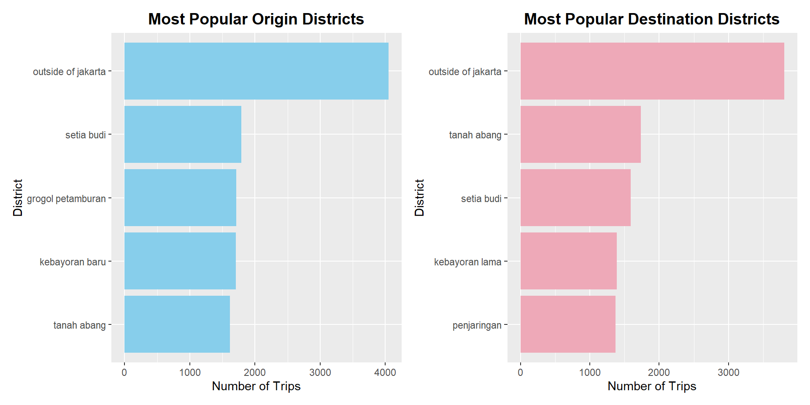
4.2 Temporal Trends
4.2.1 Distribution of Trips Throughout the Week
It will also be interesting to investigate how the demand for Grab trips changes based on time, in particular by day of week. Here, I counted the number of trips for each day of the week and driving mode by using functions from the dplyr package.
We plot the geom_bar() from ggplot2 package here. We can see that weekends have slightly fewer number of trips taken than during the weekdays. Additionally, the choice between motorcycle or car is almost equal, with a marginally higher number of motorcycle trips taken across all days. Out of all days of the week, Thursdays have the highest number of trips taken which coincides with a school and work day, while Sunday which coincides with a rest day showed the least number of trips.
weekly_trips <- trips %>%
group_by(origin_day, driving_mode) %>%
summarise(total_trips = n(), .groups = 'drop') %>%
arrange(match(origin_day, c("Monday", "Tuesday", "Wednesday", "Thursday", "Friday", "Saturday", "Sunday")))
weekly_trips$origin_day <- factor(weekly_trips$origin_day,
levels = c("Monday", "Tuesday", "Wednesday", "Thursday", "Friday", "Saturday", "Sunday"))
ggplot(weekly_trips, aes(x = origin_day, y = total_trips, fill = driving_mode)) +
geom_bar(stat = "identity", position = "stack") + # Stacked bar chart
labs(title = "Number of Trips Throughout the Week by Driving Mode",
x = "Day of the Week",
y = "Number of Trips") +
scale_fill_manual(values = c("car" = "lightblue", "motorcycle" = "pink2")) + # Custom colors
theme_gray() +
theme(plot.title = element_text(hjust = 0.5, size = 14, face = "bold")) +
geom_text(aes(label = total_trips),
position = position_stack(vjust = 0.5),
color = "black",
size = 4,
show.legend = FALSE) 4.2.2 Distribution of number of trips throughout the Day
1) By Individual Hours
By using the geom_bar function, we can plot the count of Grab trips taken for each hour of a day. The peak traffic time appears to be at 10am while the quietest period is at 7pm in the evening. We cna also see the the demand for traffic rising from 12am onward which then declines in number of Grab trips past 10am.
hourly_trips <- trips %>%
group_by(origin_hour) %>%
summarise(number_of_trips = n(), .groups = 'drop') %>%
arrange(origin_hour)
hourly_trips$origin_hour <- factor(hourly_trips$origin_hour,
levels = sort(unique(trips$origin_hour)))
ggplot(hourly_trips, aes(x = origin_hour, y = number_of_trips, group = 1)) + # Set group = 1
geom_line(color = "lightblue3", linewidth = 1) +
geom_point(color = "lightblue3", size = 2) +
geom_text(aes(label = number_of_trips), vjust = -0.5, color = "black", size = 3) +
labs(title = "Distribution of Number of Trips Throughout the Day",
x = "Hour of the Day",
y = "Number of Trips") +
theme_gray() +
theme(
plot.title = element_text(hjust = 0.5, size = 14, face = "bold"),
axis.text.x = element_text(angle = 45, hjust = 1) # Rotate x-axis text for readability
) +
theme(legend.position = "none")2) By Aggregated Hour Category
Additionally, we can also aggregate the hour_category column into morning, afternoon, evening and midnight, including whether they are peak or lull periods, as such. This allows for easier interpretability of the data charts.
trips <- trips %>%
mutate(hour_category = case_when(
origin_hour %in% 1:3 ~ "midnight_peak",
origin_hour %in% 4:6 ~ "midnight_lull",
origin_hour %in% 7:9 ~ "morning_peak",
origin_hour %in% 10:12 ~ "morning_lull",
origin_hour %in% 13:15 ~ "afternoon_peak",
origin_hour %in% 16:18 ~ "afternoon_lull",
origin_hour %in% 19:21 ~ "evening_peak",
origin_hour %in% c(22:24,0) ~ "evening_lull"
)) %>%
mutate(hour_category = factor(hour_category,
levels = c("midnight_peak", "midnight_lull",
"morning_peak", "morning_lull",
"afternoon_peak", "afternoon_lull",
"evening_peak", "evening_lull")))As shown, the morning peak hours of 6am to 9am have the highest number of Grab trips while the evening peak periods of 6pm to 9pm have the least number of trips taken.
hourly_trips <- trips %>%
group_by(hour_category) %>%
summarise(number_of_trips = n(), .groups = 'drop')
hourly_trips$hour_category <- factor(hourly_trips$hour_category,
levels = unique(hourly_trips$hour_category))
ggplot(hourly_trips, aes(x = hour_category, y = number_of_trips, group = 1)) +
geom_line(color = "lightblue3", linewidth = 1) +
geom_point(color = "lightblue3", size = 2) +
geom_text(aes(label = number_of_trips), vjust = -0.5, color = "black", size = 3.5) +
labs(title = "Distribution of Number of Trips By Hour Category",
x = "Hour Category",
y = "Number of Trips") +
theme_gray() +
theme(
plot.title = element_text(hjust = 0.5, size = 14, face = "bold"),
axis.text.x = element_text(angle = 45, hjust = 1)
) +
theme(legend.position = "none")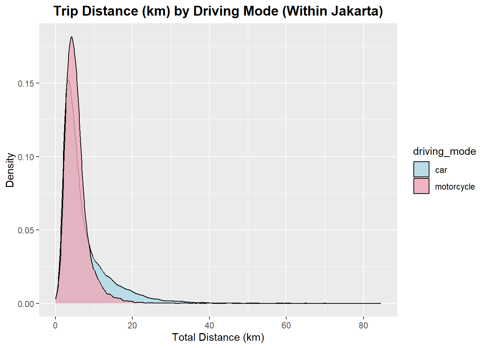
4.2.3 Distribution of Trip Duration
1) By Time of Day
Similar to the distribution of trip distance, by using geom_violin() from ggplot2 package, we can visualise the spread of trip duration (in minutes) from origin to destination, based on each hour category. Here, we randomly sample 2000 trip data to enable more readability since plotting the entire dataset will result in a chunk of dots that do not offer insights into the spread of trip distance.
Across each hour category, the total duration spent on Grab journeys tend to be similar in their median values. Perhaps, we see the most outliers in trip distances for trips taken during the morning lull and evening lull where extremely long trip distances are observed.
sampled_trips <- trips %>%
sample_n(2000)
ggplot(sampled_trips, aes(x = hour_category, y = total_duration_minutes, fill = hour_category)) +
geom_violin(trim = FALSE, alpha = 0.6, draw_quantiles = c("0.5")) +
geom_jitter(width = 0.2, size = 0.5, alpha = 0.2, color = "black") +
labs(title = "Distribution of Trip Duration (minutes) by Hour Category",
x = "Hour Category",
y = "Total Duration (minutes)") +
theme_gray() +
theme(
plot.title = element_text(hjust = 0.5, size = 14, face = "bold"),
axis.text.x = element_text(angle = 45, hjust = 1) # Tilt x-axis labels
) +
scale_fill_manual(values = c("lightblue", "lightcoral", "lightgreen", "lightpink", "lightyellow", "lightgray", "lightcyan", "lightgoldenrod")) +
theme(legend.position = "none") 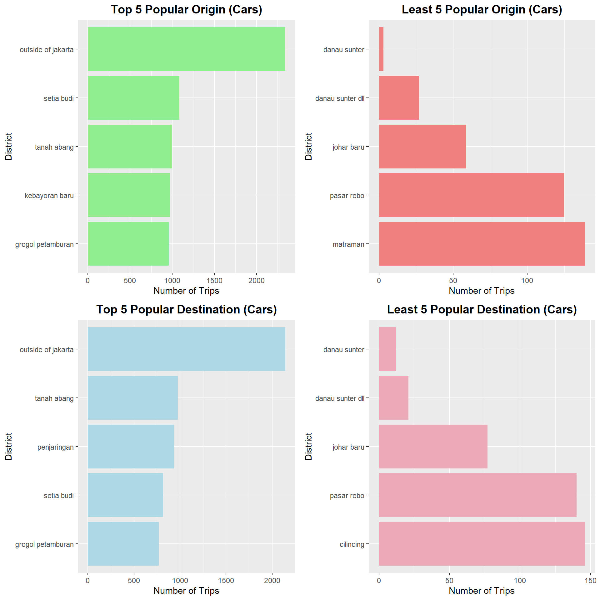
When I remove outliers in total_duration_minutes that fall below Q1 - 1.5 * IQR or above Q3 + 1.5 * IQR, we can once again observe that the median duration taken is the same across all time of day.
# Calculate IQR and filter outliers in total_duration_minutes
filtered_trips <- trips %>%
filter(between(total_duration_minutes,
quantile(total_duration_minutes, 0.25) - 1.5 * IQR(total_duration_minutes),
quantile(total_duration_minutes, 0.75) + 1.5 * IQR(total_duration_minutes))) %>%
sample_n(2000)
# Plot without outliers
ggplot(filtered_trips, aes(x = hour_category, y = total_duration_minutes, fill = hour_category)) +
geom_violin(trim = FALSE, alpha = 0.6, draw_quantiles = c("0.5")) +
geom_jitter(width = 0.2, size = 0.5, alpha = 0.2, color = "black") +
labs(title = "Distribution of Trip Duration (minutes) by Hour Category - No Outliers",
x = "Hour Category",
y = "Total Duration (minutes)") +
theme_gray() +
theme(
plot.title = element_text(hjust = 0.5, size = 14, face = "bold"),
axis.text.x = element_text(angle = 45, hjust = 1) # Tilt x-axis labels
) +
scale_fill_manual(values = c("lightblue", "lightcoral", "lightgreen", "lightpink", "lightyellow", "lightgray", "lightcyan", "lightgoldenrod")) +
theme(legend.position = "none")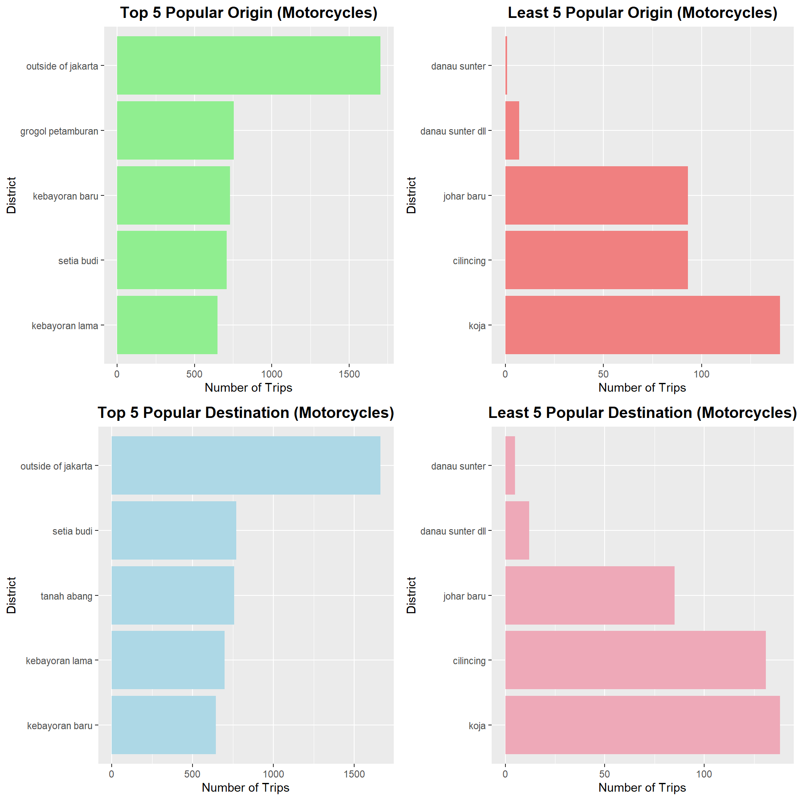
2) By Day of Week
In terms of day of the week, Mondays, Tuesdays and Wednesdays tend to have a slightly shorter trip duration than the rest of the days of the week.
# Sample 2000 trips
sampled_trips <- trips %>%
sample_n(2000)
# Reorder origin_day as a factor with levels from Monday to Sunday
sampled_trips$origin_day <- factor(sampled_trips$origin_day,
levels = c("Monday", "Tuesday", "Wednesday", "Thursday", "Friday", "Saturday", "Sunday"))
# Create the violin plot
ggplot(sampled_trips, aes(x = origin_day, y = total_duration_minutes, fill = origin_day)) +
geom_violin(trim = FALSE, alpha = 0.6, draw_quantiles = c("0.5")) +
geom_jitter(width = 0.2, size = 0.5, alpha = 0.2, color = "black") +
labs(title = "Distribution of Trip Duration (minutes) by Day of Week",
x = "Day of Week",
y = "Trip Duration (minutes)") +
theme_gray() +
theme(
plot.title = element_text(hjust = 0.5, size = 14, face = "bold"),
axis.text.x = element_text(angle = 45, hjust = 1) # Tilt x-axis labels
) +
scale_fill_manual(values = c("lightblue", "lightcoral", "lightgreen", "lightpink", "lightyellow", "lightgray", "lightcyan")) +
theme(legend.position = "none")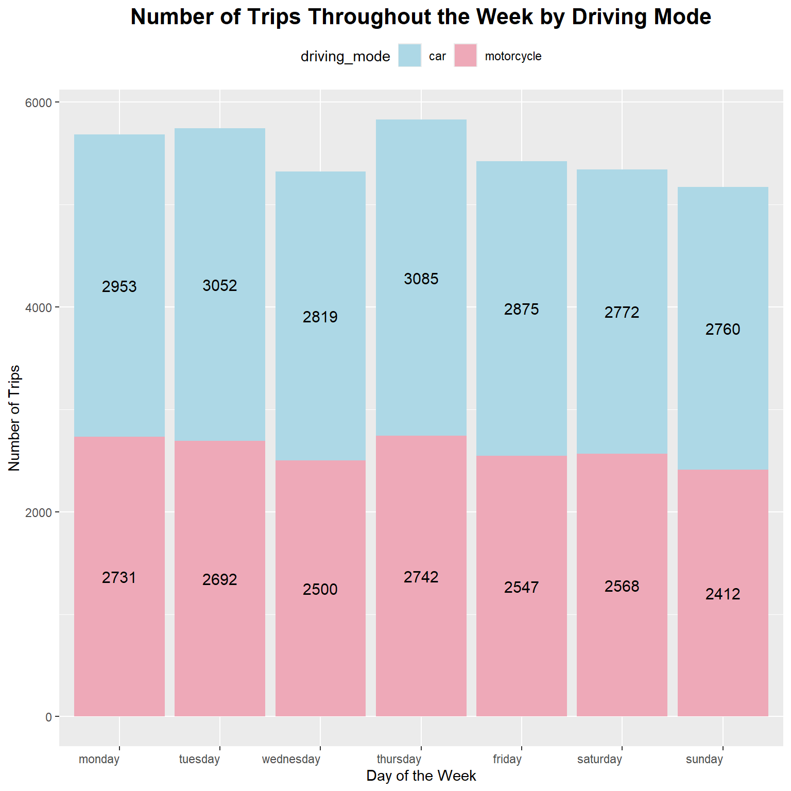
We have a clearer view of the spread of trip duration when we remove all outliers. We can see that trips taken on Wednesday tend to be shorter journeys than other days of the week.
# Remove outliers based on IQR and then sample 2000 trips
filtered_trips <- trips %>%
filter(between(total_duration_minutes,
quantile(total_duration_minutes, 0.25) - 1.5 * IQR(total_duration_minutes),
quantile(total_duration_minutes, 0.75) + 1.5 * IQR(total_duration_minutes))) %>%
sample_n(2000)
# Reorder origin_day as a factor with levels from Monday to Sunday
filtered_trips$origin_day <- factor(filtered_trips$origin_day,
levels = c("Monday", "Tuesday", "Wednesday", "Thursday", "Friday", "Saturday", "Sunday"))
# Create the violin plot without outliers
ggplot(filtered_trips, aes(x = origin_day, y = total_duration_minutes, fill = origin_day)) +
geom_violin(trim = FALSE, alpha = 0.6, draw_quantiles = c("0.5")) +
geom_jitter(width = 0.2, size = 0.5, alpha = 0.2, color = "black") +
labs(title = "Distribution of Trip Duration (minutes) by Day of Week - No Outliers",
x = "Day of Week",
y = "Trip Duration (minutes)") +
theme_gray() +
theme(
plot.title = element_text(hjust = 0.5, size = 14, face = "bold"),
axis.text.x = element_text(angle = 45, hjust = 1) # Tilt x-axis labels
) +
scale_fill_manual(values = c("lightblue", "lightcoral", "lightgreen", "lightpink", "lightyellow", "lightgray", "lightcyan")) +
theme(legend.position = "none")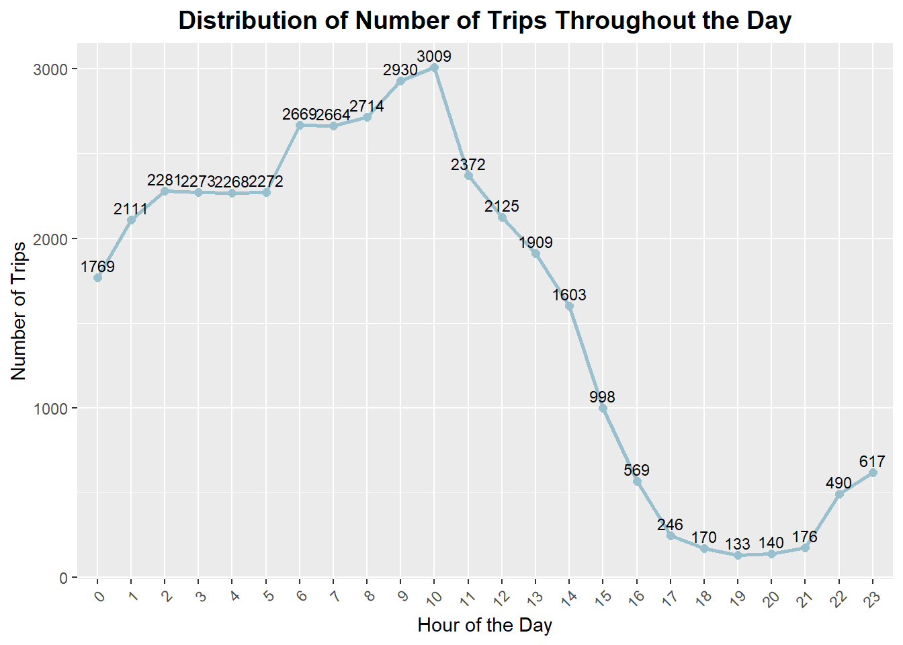
3) By Driving Mode
We can also use the driving_mode column of the trips data to plot the distribution of trip duration. We can see that motorcycles are slighty more preferred for shorter trip duration than cars,though cars are almost equally as demanded. In terms of longer journeys which involve more minutes, taking the car is more preferred as a mode of driving.
ggplot(trips, aes(x = total_duration_minutes, fill = driving_mode)) +
geom_density(alpha = 0.8) +
labs(title = "Trip Duration (minutes) by Driving Mode (All Trips)",
x = "Total Duration (minutes)",
y = "Density") +
theme_gray() +
theme(plot.title = element_text(hjust = 0.5, size = 14, face = "bold")) +
scale_fill_manual(values = c("lightblue", "pink2"))
We can also observe the distribution of trip duration within Jakarta only, meaning we filter out all origin and destinations that are discovered to be outside of Jakarta. Likewise, cars are slightly more preferred than motorcycles for longer trip duration.
ggplot(trips_inside_jakarta, aes(x = total_duration_minutes, fill = driving_mode)) +
geom_density(alpha = 0.8) +
labs(title = "Trip Duration (minutes) by Driving Mode (Within Jakarta)",
x = "Total Duration (minutes)",
y = "Density") +
theme_gray() +
theme(plot.title = element_text(hjust = 0.5, size = 14, face = "bold")) +
scale_fill_manual(values = c("lightblue", "pink2"))4.2.4 Distribution of Trip Distance
1) By Time of Day
Again, we randomly sample 2000 trip data to plot the violin plot of total_distance_km against hour categories. We can observe that longer distances are traveled during the afternoon lull and evening peak periods on average which could be attributed to high traffic volumes or jams on the road.
sampled_trips <- trips %>%
sample_n(2000)
ggplot(sampled_trips, aes(x = hour_category, y = total_distance_km, fill = hour_category)) +
geom_violin(trim = FALSE, alpha = 0.6, draw_quantiles = "0.5") +
geom_jitter(width = 0.2, size = 0.5, alpha = 0.2, color = "black") +
labs(title = "Distribution of Trip Distance (km) by Hour Category",
x = "Hour Category",
y = "Total Distance (km)") +
theme_gray() +
theme(
plot.title = element_text(hjust = 0.5, size = 14, face = "bold"),
axis.text.x = element_text(angle = 45, hjust = 1) # Tilt x-axis labels
) +
scale_fill_manual(values = c("lightblue", "lightcoral", "lightgreen", "lightpink", "lightyellow", "lightgray", "lightcyan", "lightgoldenrod")) +
theme(legend.position = "none") 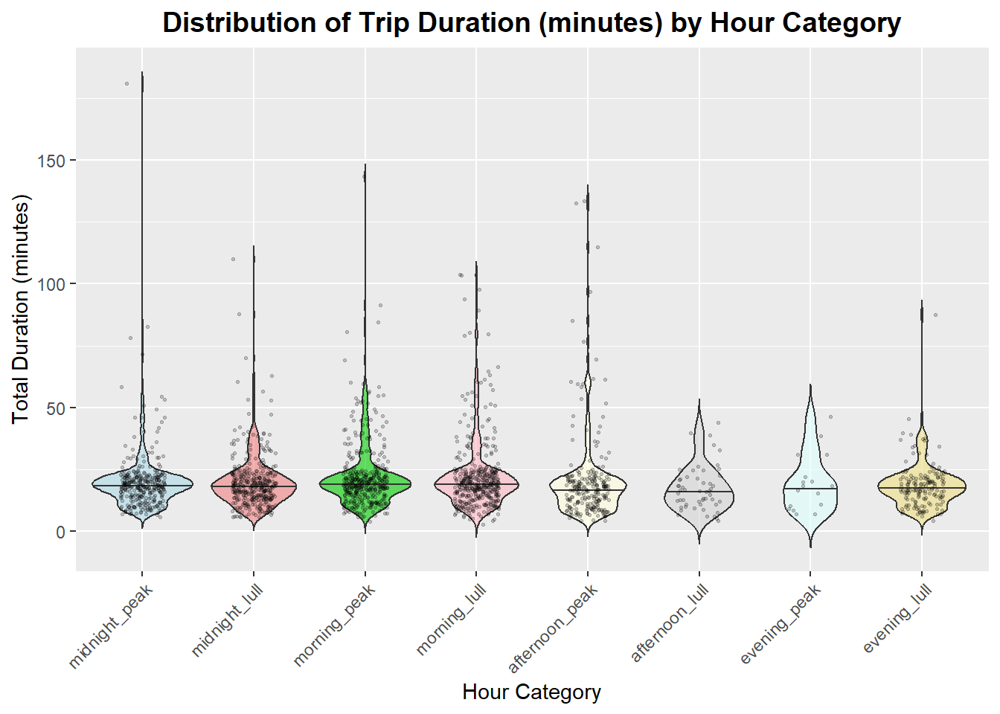
2) By Day of Week
The chart suggests that trips taken on Saturday and Sunday have the highest average distance travelled, meaning that people are more willing to travel to destinations further away from where they stay on these days.
library(ggplot2)
library(dplyr)
# Sample 2000 trips
sampled_trips <- trips %>%
sample_n(2000)
# Reorder origin_day as a factor with levels from Monday to Sunday
sampled_trips$origin_day <- factor(sampled_trips$origin_day,
levels = c("Monday", "Tuesday", "Wednesday", "Thursday", "Friday", "Saturday", "Sunday"))
# Create the violin plot
ggplot(sampled_trips, aes(x = origin_day, y = total_distance_km, fill = origin_day)) +
geom_violin(trim = FALSE, alpha = 0.6, draw_quantiles = "0.5") +
geom_jitter(width = 0.2, size = 0.5, alpha = 0.2, color = "black") +
labs(title = "Distribution of Trip Distance (km) by Day of Week",
x = "Day of Week",
y = "Total Distance (km)") +
theme_gray() +
theme(
plot.title = element_text(hjust = 0.5, size = 14, face = "bold"),
axis.text.x = element_text(angle = 45, hjust = 1) # Tilt x-axis labels
) +
scale_fill_manual(values = c("lightblue", "lightcoral", "lightgreen", "lightpink", "lightyellow", "lightgray", "lightcyan")) +
theme(legend.position = "none")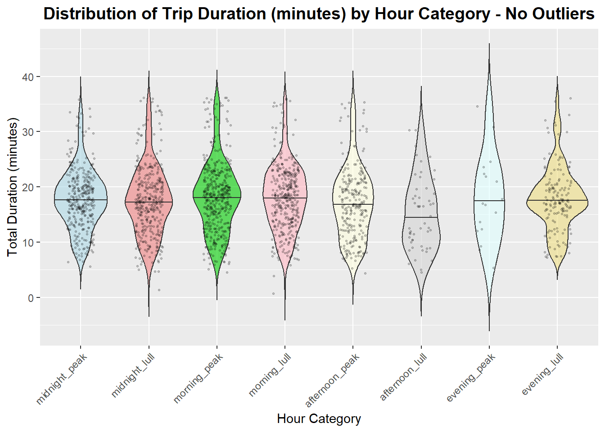
4.2.5 Day of Week and Hourly Patterns in Ride-hailing Demand
Now, let’s generate a heatmap displaying the distribution of trips across different days of the week (using the origin_day column) and the specified hour categories, with the fill color indicating the number of trips. The days are ordered from Monday to Sunday, making it easier to interpret the data.
We can observe the highest number of trips taken during both morning peak and lull periods on Thursdays, as well as, Saturday midnight lull periods. On the other hand, Monday and Tuesday evening peaks have the lowest number of trips.
# Create a new summary data frame using hour_category
heatmap_data <- trips %>%
group_by(origin_day, hour_category) %>%
summarise(number_of_trips = n(), .groups = 'drop') %>%
arrange(origin_day, hour_category)
# Convert origin_day to a factor with specific order
heatmap_data$origin_day <- factor(heatmap_data$origin_day,
levels = c("Monday", "Tuesday", "Wednesday", "Thursday",
"Friday", "Saturday", "Sunday")) # Specify the order
# Convert hour_category to a factor for better ordering
heatmap_data$hour_category <- factor(heatmap_data$hour_category,
levels = c("midnight_peak", "midnight_lull",
"morning_peak", "morning_lull",
"afternoon_peak", "afternoon_lull",
"evening_peak", "evening_lull"))
# Create the heatmap
ggplot(heatmap_data, aes(x = hour_category, y = origin_day)) +
geom_tile(aes(fill = number_of_trips), color = "white") +
geom_text(aes(label = number_of_trips), color = "black", size = 4) +
scale_fill_gradient(low = "lightblue", high = "darkblue", name = "Number of Trips") +
labs(title = "Heatmap of Number of Trips by Day and Hour Category",
x = "Hour Category",
y = "Day") +
theme_minimal() +
theme(
plot.title = element_text(hjust = 0.5, size = 16, face = "bold"),
axis.text.x = element_text(angle = 45, hjust = 1)
)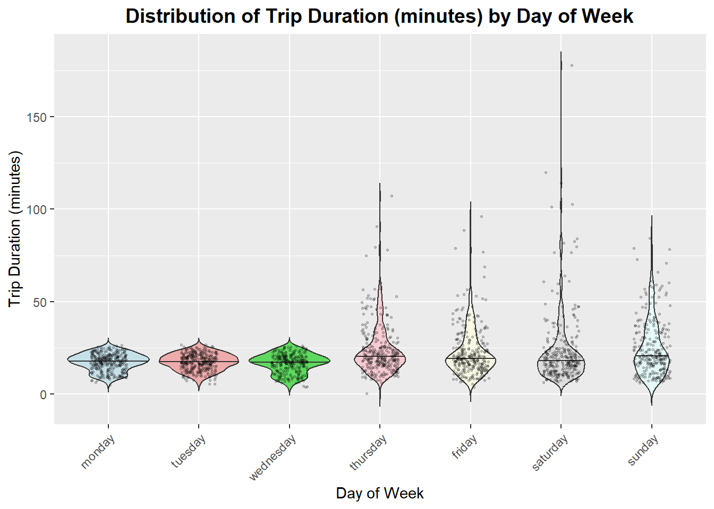
4.3 Impact of Weather
4.3.1 How does the volume of trips change with weather conditions (rain vs. no rain)?
Plot/Graph: Boxplot comparing rainy vs. non-rainy days
Analysis/Conclusion: Understand how adverse weather affects overall trip volume. This can reveal if people use ride-hailing more or less in different weather conditions.
4.3.2 Do weather conditions affect trip demand differently for motorbikes vs. cars?
Plot/Graph: Side-by-side boxplots for cars and motorbikes
Analysis/Conclusion: Analyze how weather influences the use of motorbikes versus cars. Motorbike demand may drop significantly during rain.
4.4 Point of Interest (POI) Analysis
4.4.1 Distribution of POIs Across Districts
We can visualise the distribution of POIs across each district using the district_dest augmented dataframe we created previously. With that said, we can observe that the top three highest number POIs are found in the districts Kebayoran Baru, Setia Budi and Grogol Petamburan.
# Plot the distribution of POIs across districts
ggplot(district_dest, aes(x = reorder(district, num_of_pois), y = num_of_pois)) +
geom_bar(stat = "identity", fill = "lightblue3") +
labs(title = "Distribution of POIs Across Districts",
x = "District",
y = "Number of POIs") +
theme_gray() +
theme(
plot.title = element_text(hjust = 0.5, size = 14, face = "bold"),
axis.text.x = element_text(angle = 45, hjust = 1)
)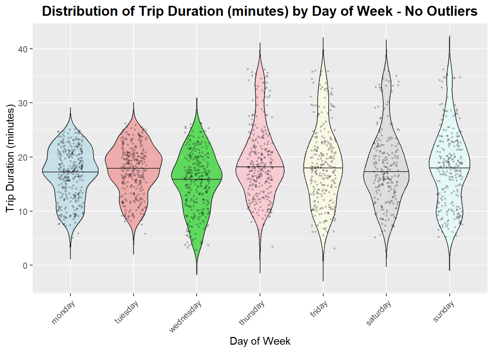
Next, let us use the pois_num dataframe created earlier. I will plot a heatmap plot using the geom_tile() function of the ggplot2 package to understand how the number of trips demanded vary by district and POI category. We can evidently see that districts like Danau Sunter have low to no POIs, with only essentials (e.g. clinics, veteranarians) found in the district. However, in districts that may be more populated or urbanised, we see a higher number of POIs for the office businesses, restaurants and food, and shops as marked by the darker shades of blue below.
# Count the number of POIs by district
pois_num_cat <- pois %>%
st_drop_geometry() %>%
group_by(district, category) %>%
summarise(num_of_pois = n(), .groups = 'drop')
heatmap_plot <- ggplot(pois_num_cat, aes(x = category, y = district, fill = num_of_pois)) +
geom_tile(color = "white") + # Create tiles with white borders
scale_fill_gradient(low = "lightblue", high = "darkblue") + # Color gradient
labs(
title = "Heatmap of Points of Interest by District and Category",
x = "POI Category",
y = "District",
fill = "Number of POIs"
) +
theme_minimal() + # Clean theme
theme(
axis.text.x = element_text(angle = 45, hjust = 1), # Rotate x-axis labels
plot.title = element_text(hjust = 0.5, size = 16, face = "bold") # Center the title
)
print(heatmap_plot)4.4.2 Demand of Ride-hailing Services by POI
To prepare the dataset for the analysis involving POIs, I will augment the jakarta_pois.rds dataset by aggregating the trips data from the trips simple dataframe. Restaurants, office businesses and shops seem to dominate the POIs available in Jakarta, while cultural attractions and recreation entertainment suggests to be less available.
category_counts <- pois %>%
group_by(category) %>%
summarise(num_of_pois = n()) %>%
arrange(desc(num_of_pois))
ggplot(category_counts, aes(x = reorder(category, -num_of_pois), y = num_of_pois, fill = num_of_pois)) +
geom_bar(stat = "identity") +
geom_text(aes(label = num_of_pois), vjust = -0.5, size = 4) +
labs(
title = "Distribution of POIs Across Jakarta",
x = "Category",
y = "Number of POIs"
) +
theme_gray() +
theme(
plot.title = element_text(hjust = 0.5, size = 16, face = "bold"),
axis.text.x = element_text(angle = 45, hjust = 1, color = "grey30"),
legend.position = "none"
) +
scale_fill_gradient(low = "lightblue", high = "darkblue") We can also plot the number of POIs discovered across each POI category type by using a radar chart. Here, I am employing the radarchart() function of the fmsb package.
category_counts <- pois %>%
group_by(category) %>%
summarise(num_of_pois = n()) %>%
arrange(desc(num_of_pois))
max_value <- max(category_counts$num_of_pois)
min_value <- 0
radar_data <- rbind(
rep(max_value, nrow(category_counts)),
rep(min_value, nrow(category_counts)),
t(category_counts$num_of_pois)
)
radar_data <- as.data.frame(radar_data)
colnames(radar_data) <- category_counts$category
radarchart(
radar_data,
axistype = 1,
pcol = rgb(0.2, 0.4, 0.4, 0.6), # Line color
pfcol = rgb(0.2, 0.2, 0.2, 0.2), # Fill color
plwd = 2, # Line width
cglcol = "lightblue3", # Grid line color
cglty = 1, # Grid line type
axislabcol = "black", # Axis label color
caxislabels = seq(0, max_value, length.out = 5), # Axis labels
cglwd = 1.2, # Grid line width
vlcex = 1 # Category label size
)
title("Distribution of POIs Across Jakarta", cex.main = 1.4)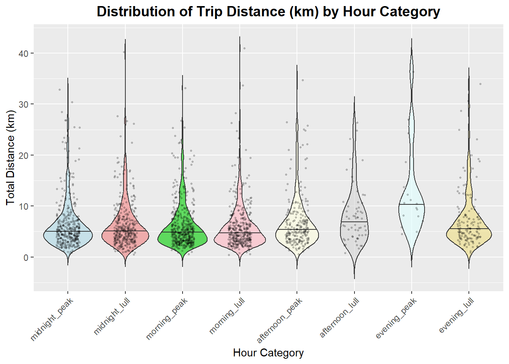
Next, I will go deeper into finding out how many Grab trips were taken to these destinations at the district level. It can be observed that a larger number of POIs (pink) within a district lead to similarly higher number of Grab trips taken (blue) to the district.
# Reshape the data for plotting
district_long <- district_dest %>%
pivot_longer(cols = c(num_of_trips, num_of_pois),
names_to = "metric",
values_to = "count")
# Plot the line charts
ggplot(district_long, aes(x = district, y = count, group = metric, color = metric)) +
geom_line(linewidth = 1) +
geom_point(size = 2) +
labs(
title = "Trends in Number of Trips and Availability of POIs by District",
x = "District",
y = "Number of Trips",
color = "Metric"
) +
scale_color_manual(values = c("num_of_trips" = "lightblue3", "num_of_pois" = "pink3")) +
theme_gray() +
theme(
axis.text.x = element_text(angle = 45, hjust = 1),
plot.title = element_text(size = 16, hjust = 0.5, face = "bold")
)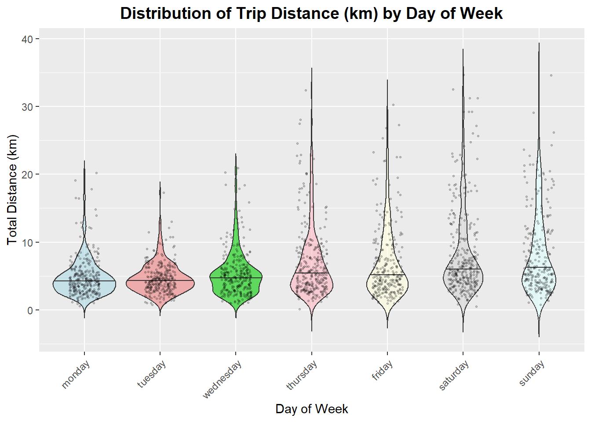
The scatterplot below indicates that more Grab trips are taken for smaller average distances travelled from the passenger’s origin, suggesting most trips are bounded within shorter distances. This is surprising since I would have assumed a higher demand for Grab services for when the destination is far from the passenger’s origin.
In addition, we can also observe that destinations with a higher number of POI (darker shades of blue) tend to result in more Grab trips taken. This means that passengers are more likely to take a trip to districts in Jakarta that offer more POIs.
district_pois_5 <- district_dest %>%
mutate(pois_category = cut(num_of_pois,
breaks = 5,
labels = c("100", "200", "300", "400", "500"),
include.lowest = TRUE))
color_palette <- c("100" = "#A3C6E4", # Light blue
"200" = "#76A4D6", # Medium light blue
"300" = "#4A83C6", # Medium blue
"400" = "#1F5DA0", # Dark blue
"500" = "#003C71") # Darker blue
ggplot(district_pois_5, aes(x = num_of_trips, y = avg_distance_km, size = num_of_pois, color = pois_category)) +
geom_point(alpha = 0.7) +
labs(
title = "Correlation of Number of Trips and Average Distance by Number of POIs",
x = "Number of Trips",
y = "Average Distance (km)",
size = "Number of POIs",
color = "Number of POIs" # Renamed here
) +
scale_size(range = c(1, 6)) + # Adjust point size range
scale_color_manual(values = color_palette) + # Apply custom color palette
theme_gray() +
theme(
plot.title = element_text(size = 16, hjust = 0.5, face = "bold"),
legend.position = "right"
)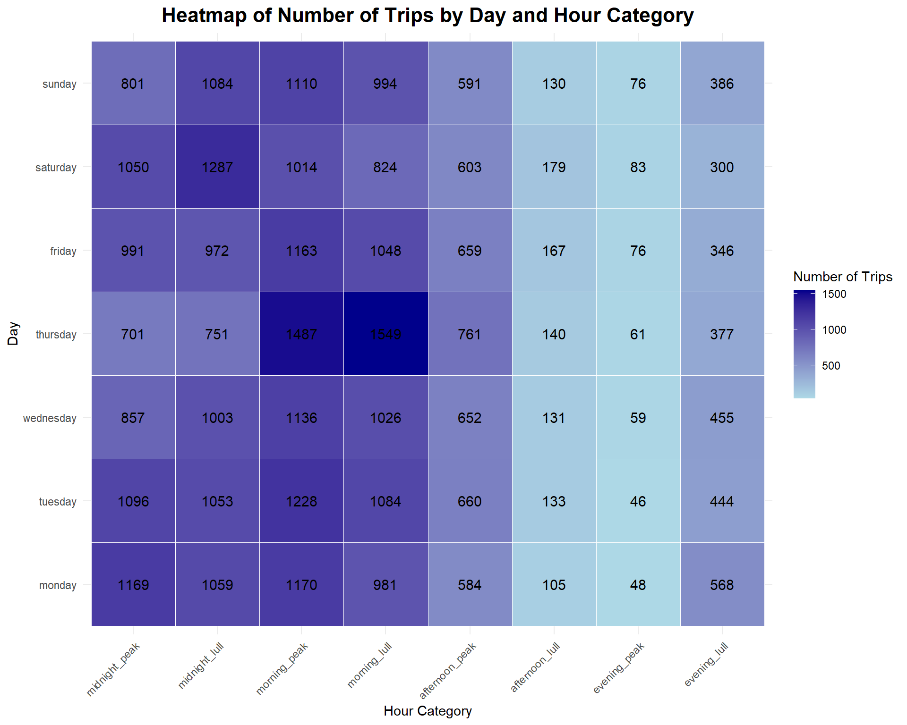
4.4.3 Correlation of Number of Trips and POIs
We can observe a positive correlation between the number of trips taken to a destination and the availability of POIs in the destination district based on the linear regression model below. This means that more trips are demanded to the destination when there are more POIs available, typically these districts might be within the city with more amenities for people to eat, shop and work.
# Load required libraries
library(dplyr)
library(ggplot2)
# Calculate the correlation coefficient
correlation_result <- cor(district_dest$num_of_trips, district_dest$num_of_pois)
# Create a scatter plot with a regression line
ggplot(district_dest, aes(x = num_of_pois, y = num_of_trips)) +
geom_point(color = "blue", size = 3, alpha = 0.6) + # Points
geom_smooth(method = "lm", se = TRUE, color = "red") + # Linear regression line
labs(
title = "Correlation between Number of Trips and Number of POIs",
x = "Number of POIs",
y = "Number of Trips"
) +
theme_gray() +
theme(
plot.title = element_text(hjust = 0.5, size = 16, face = "bold")
)`geom_smooth()` using formula = 'y ~ x'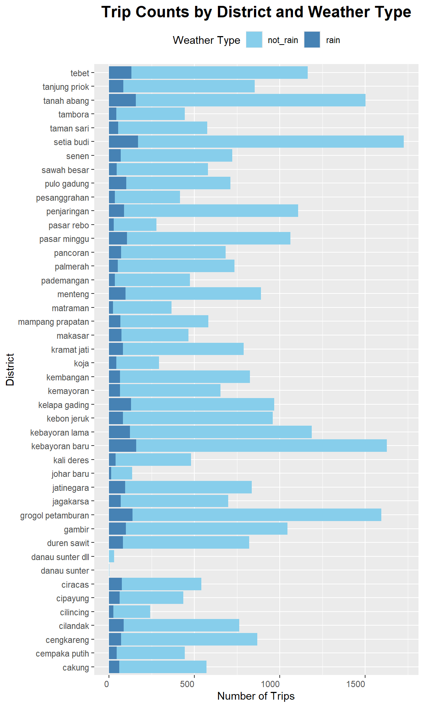
# Print the correlation result
print(paste("Correlation between Number of Trips and Number of POIs:", round(correlation_result, 2)))[1] "Correlation between Number of Trips and Number of POIs: 0.8"By including the average distance traveled, we can see that fewer passengers tend to take ride-hailing services like Grab for when the average distance of trips are shorter. For district destinations with higher number of POIs available, trip distances tend to be shorter too, which could mean that passengers likely reside near to these POIs.
district_dist_6 <- district_dest %>%
mutate(distance_category = cut(avg_distance_km,
breaks = 6,
labels = c("5.0", "5.5", "6.0", "6.5", "7.0", "7.5"),
include.lowest = TRUE))
distance_color_palette <- c("5.0" = "#A3C6E4", # Light blue
"5.5" = "#76A4D6", # Medium light blue
"6.0" = "#4A83C6", # Medium blue
"6.5" = "#1F5DA0", # Dark blue
"7.0" = "#003C71", # Darker blue
"7.5" = "midnightblue") # Deepest blue
district_dist_6 <- district_dist_6 %>%
mutate(distance_category = factor(distance_category))
ggplot(district_dist_6, aes(x = num_of_trips, y = num_of_pois)) +
geom_point(aes(color = distance_category, size = distance_category), alpha = 0.7) +
labs(
title = "Relationship between Number of Trips and Number of POIs by Average Distance",
x = "Number of Trips",
y = "Number of POIs",
size = "Average Distance Category (km)", # Legend label for distance category as size
color = "Average Distance Category (km)" # Legend label for distance categories
) +
scale_size_manual(values = c(1, 2, 3, 4, 5, 6)) + # Set specific sizes for each distance category level
scale_color_manual(values = distance_color_palette) + # Apply custom color palette
theme_gray() +
theme(
plot.title = element_text(size = 16, hjust = 0.5, face = "bold"),
axis.title = element_text(size = 12),
legend.position = "right"
)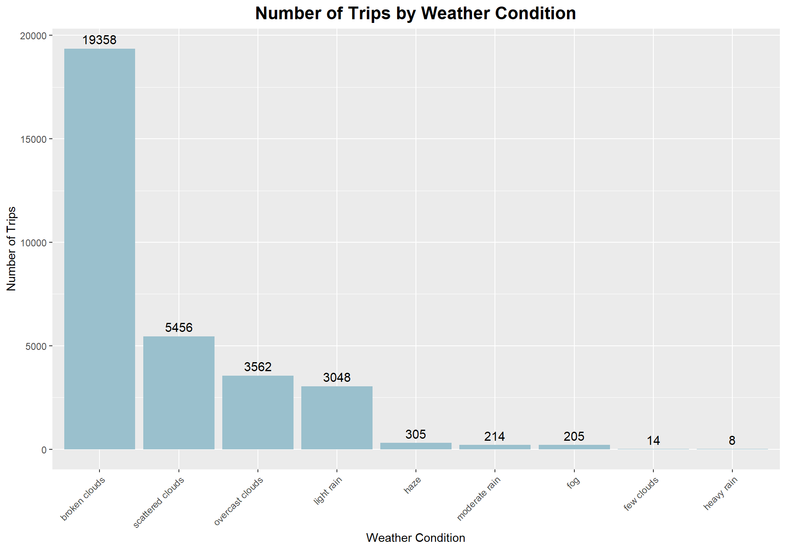
4.4.3 Traffic Volumes By Time of Day and POI Type
Next, i will want to understand traffic volumes by Hour Category and POI Category. Before that, I will create a new dataframe district_hour_pois to aggregate the 8 hour categories into 4 instead, namely morning, afternoon, evening and midnight.
Code
# Define time-of-day categories based on hour_category labels
trips_num <- trips %>%
group_by(destination_district, hour_category) %>%
summarise(num_of_trips = n(), .groups = 'drop') %>%
rename(district = destination_district) %>%
mutate(
district = tolower(district),
# Group hour_category into broader time-of-day groups
time_of_day = case_when(
hour_category %in% c("morning_peak", "morning_lull") ~ "morning",
hour_category %in% c("afternoon_peak", "afternoon_lull") ~ "afternoon",
hour_category %in% c("evening_peak", "evening_lull") ~ "evening",
hour_category %in% c("midnight_peak", "midnight_lull") ~ "midnight",
TRUE ~ "other"
),
# Set specific ordering for time_of_day
time_of_day = factor(time_of_day, levels = c("morning", "afternoon", "evening", "midnight"))
) %>%
# Group by district and new time_of_day categories, summing num_of_trips
group_by(district, time_of_day) %>%
summarise(num_of_trips = sum(num_of_trips), .groups = 'drop')
# Count the number of POIs by district & category
pois_num_cat <- pois %>%
st_drop_geometry() %>%
group_by(district, category) %>%
summarise(num_of_pois = n(), .groups = 'drop')
# Combine the two datasets by district
district_hour_pois <- trips_num %>%
inner_join(pois_num_cat, by = "district", relationship = "many-to-many") %>%
arrange(district, time_of_day)
# View the combined dataset
head(district_hour_pois)# A tibble: 6 × 5
district time_of_day num_of_trips category num_of_pois
<chr> <fct> <int> <chr> <int>
1 cakung morning 357 Cultural_Attractions 1
2 cakung morning 357 Essentials 12
3 cakung morning 357 Facilities_Services 16
4 cakung morning 357 Offices_Business 18
5 cakung morning 357 Recreation_Entertainment 2
6 cakung morning 357 Restaurants_Food 3Across all POI types, districts offering restaurants and shops tend to garner the highest demand for Grab services. In constrast, recreation entertainment showed to be least demanded by Grab users.
In the morning, Grab services are most demanded to destinations that offer facilities services, shops and essentials, where commuters are likely headed to work or settle household errands. This trend can also be observed in the afternoon.
When it comes to evening time, the number of trips taken to restaurants are seen to rise likely since commuters are done with the day and are headed for dinner. It is also surprising that Grab transport are also highly active during midnight (12am - 6pm), namely where destinations are facilities services, shops and restaurants. This could be due to commuters ending work late or heading out for work in the early morning.
aggregated_pois <- district_hour_pois %>%
group_by(category, time_of_day) %>%
summarise(num_of_trips = sum(num_of_trips, na.rm = TRUE), .groups = "drop")
ggplot(aggregated_pois, aes(x = category, y = num_of_trips, fill = time_of_day)) +
geom_bar(stat = "identity") +
geom_text(aes(label = num_of_trips),
position = position_stack(vjust = 0.5),
color = "black",
size = 3.5) +
labs(
title = "Number of POIs Visited Using Grab by Time of Day",
x = "POI Category",
y = "Number of POIs"
) +
theme_gray() +
theme(
plot.title = element_text(hjust = 0.5, size = 16, face = "bold"),
axis.text.x = element_text(angle = 45, hjust = 1)
) +
scale_fill_brewer(palette = "Blues")5. Exploratory Spatial Data Analysis (ESDA)
5.1 Spatial Distribution of Ride-Hailing Traffic
5.1.1 What is the spatial distribution of trips originating from different districts across Jakarta?
Plot/Graph: Choropleth map
Analysis/Conclusion: Observe areas of high and low trip origins. These insights can help in identifying underserved regions or overly concentrated areas.
5.1.2 How do origin-destination flows vary spatially across the city (e.g., desire lines or flow maps)?
Plot/Graph: Desire line map (spatial flow map)
Analysis/Conclusion: Highlight major commuting or movement corridors. High flow between districts suggests popular commuting routes.
5.1.3 Are there specific clusters of high ride-hailing demand that form around particular locations (e.g., central business districts, residential areas)?
Plot/Graph: Kernel density map
Analysis/Conclusion: Detect spatial clusters of high demand. Business districts might be heavy traffic zones during office hours.
5.2 Spatial Correlation & Hotspot Detection
5.2.1 Are there spatial patterns or clusters of high ride-hailing traffic (using techniques like spatial autocorrelation or hotspot analysis)?
Plot/Graph: Hotspot map or Moran’s I for spatial autocorrelation
Analysis/Conclusion: Identify areas where traffic demand is spatially concentrated. Hotspots can inform traffic management strategies.
5.2.2 Where are the spatial hotspots of traffic congestion or high demand for rides?
Plot/Graph: Heatmap or kernel density map
Analysis/Conclusion: Analyze where demand is so high that congestion becomes an issue. Look for recurring patterns to adjust traffic flow or driver distribution.
5.3 Spatial Relationships with Points of Interest
5.3.1 How does the distance from key POIs (e.g., schools, hospitals, malls, offices) impact ride-hailing traffic patterns in surrounding districts?
Plot/Graph: Bubble map with distance from POIs
Analysis/Conclusion: Correlate traffic density with proximity to POIs. Shorter distances from key locations might lead to higher demand.
5.3.2 Are there spatial relationships between POIs and the volume of trips originating or terminating nearby?
Plot/Graph: Heatmap for POIs vs. trip volumes
Analysis/Conclusion: Understand how certain POIs contribute to trip volume. This is important for prioritizing service areas.
5.4 Impact of Weather on Spatial Patterns
5.4.1 How does rainy weather influence spatial traffic patterns? Do people travel more or less between certain districts during rain?
Plot/Graph: Comparative maps for rainy vs. non-rainy days
Analysis/Conclusion: Compare spatial flows under different weather conditions. Some areas may see drops in traffic due to adverse weather.
5.5 Origin-Destination Spatial Flows
Next, we can also delve into the spatial flows between origin and destination districts. To do so, I will leverage the geom_alluviam() function of the ggplot2 and ggalluvial packages to map the flows. I will also ientify the top 5 origin / destination districts by doing a filter() on the data as shown.
5.5.1 Flow from All Origins to Top 5 Destinations
We can see how complex the spread of origin districts are, where a thicker line connecting the origin and destination resembles a higher demand for Grab. In this case, we can see tha trips taken outside of Jakarta into the district of Kebayoran Lama are the highest. Likewise, Grab trips moving from Kebayoran Lama to outside of Jakarta are the highest.
# Identify the top 5 destination districts
top_5_destinations <- trips %>%
count(destination_district) %>%
top_n(5, wt = n) %>%
pull(destination_district)
# Filter the data to include only top 5 destinations
flow_data <- trips %>%
filter(destination_district %in% top_5_destinations) %>%
count(origin_district, destination_district) %>%
rename(count = n)
# Plot the alluvial diagram
ggplot(flow_data, aes(axis1 = origin_district, axis2 = destination_district, y = count)) +
geom_alluvium(aes(fill = destination_district)) +
geom_stratum() +
geom_text(stat = "stratum", aes(label = after_stat(stratum))) +
labs(title = "Flow from Origin to Top 5 Destination Districts",
x = "Districts",
y = "Number of Trips") +
theme_minimal() +
theme(plot.title = element_text(hjust = 0.5, size = 14, face = "bold"))5.5.2 Flow Pattern from Top 5 Origins to All Destinations
# Identify the top 5 origin districts based on the number of trips
top_5_origins <- trips %>%
count(origin_district) %>%
top_n(5, wt = n) %>%
pull(origin_district)
# Filter the data to include only top 5 origins and their corresponding destination districts
flow_data <- trips %>%
filter(origin_district %in% top_5_origins) %>%
count(origin_district, destination_district) %>%
rename(count = n)
# Plot the alluvial diagram
ggplot(flow_data, aes(axis1 = origin_district, axis2 = destination_district, y = count)) +
geom_alluvium(aes(fill = origin_district)) + # Use origin_district for fill
geom_stratum() +
geom_text(stat = "stratum", aes(label = after_stat(stratum)), size = 4) +
labs(title = "Flow from Top 5 Origin Districts to Destination Districts",
x = "Districts",
y = "Number of Trips") +
theme_minimal() +
theme(plot.title = element_text(hjust = 0.5, size = 14, face = "bold"),
axis.text.x = element_text(angle = 45, hjust = 1)) # Tilt x-axis labels for better readability5.5.3 Flow Patterns from Top 5 Origins to Top 5 Destinations
I believe we can make the most meaningful analysis when just looking at the top 5 originating and top 5 destination districts where these districts had the highest number of Grab trips taken. We can observe that Setia Budi is a popular origin and destination for Grab services, in fact, many of the trips are found within the district itself.
# Step 1: Identify the top 5 origin districts
top_5_origins <- trips %>%
count(origin_district) %>%
top_n(5, wt = n) %>%
pull(origin_district)
# Step 2: Identify the top 5 destination districts
top_5_destinations <- trips %>%
count(destination_district) %>%
top_n(5, wt = n) %>%
pull(destination_district)
# Step 3: Filter the trips data for top districts only
flow_data <- trips %>%
filter(origin_district %in% top_5_origins & destination_district %in% top_5_destinations) %>%
count(origin_district, destination_district) %>%
rename(count = n)
# Step 4: Create a new column to distinguish origins and destinations
flow_data <- flow_data %>%
mutate(district_type = ifelse(origin_district %in% top_5_origins, "Origin", "Destination"))
# Step 5: Plot the alluvial diagram
ggplot(flow_data, aes(axis1 = origin_district, axis2 = destination_district, y = count)) +
geom_alluvium(aes(fill = origin_district)) +
geom_stratum() +
geom_text(stat = "stratum", aes(label = after_stat(stratum)), size = 4, color = "black") +
labs(title = "Flow of Trips Between Top 5 Origin and Top 5 Destination Districts in Jakarta",
x = "Districts",
y = "Number of Trips") +
theme_minimal() +
theme(plot.title = element_text(hjust = 0.5, size = 14, face = "bold"),
axis.text.x = element_text(angle = 45, hjust = 1))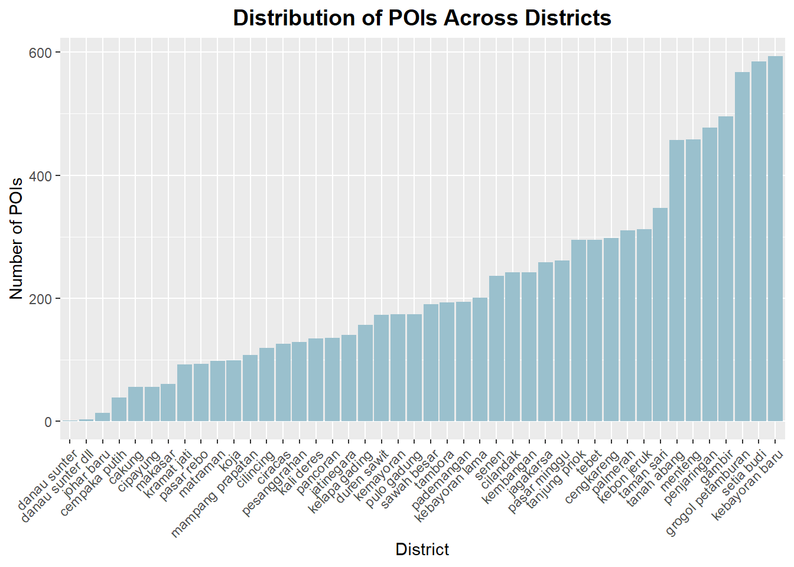
What are the major spatial flow patterns (origin to destination) across different districts in Jakarta?
Plot/Graph: Flow map or desire line map
Analysis/Conclusion: Analyze directional flows to understand commuter or travel behavior between regions.
6.3 Do spatial flow patterns change depending on the vehicle type or time of day?
Plot/Graph: Comparative flow maps for motorbikes and cars
Analysis/Conclusion: Identify different flow patterns for vehicle types, potentially revealing different uses of motorbikes versus cars.